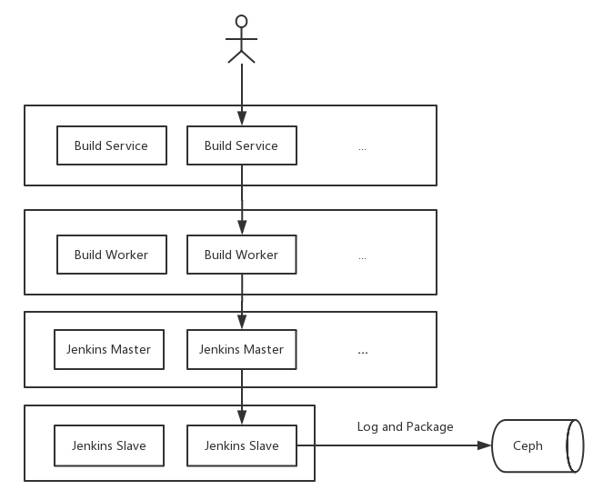
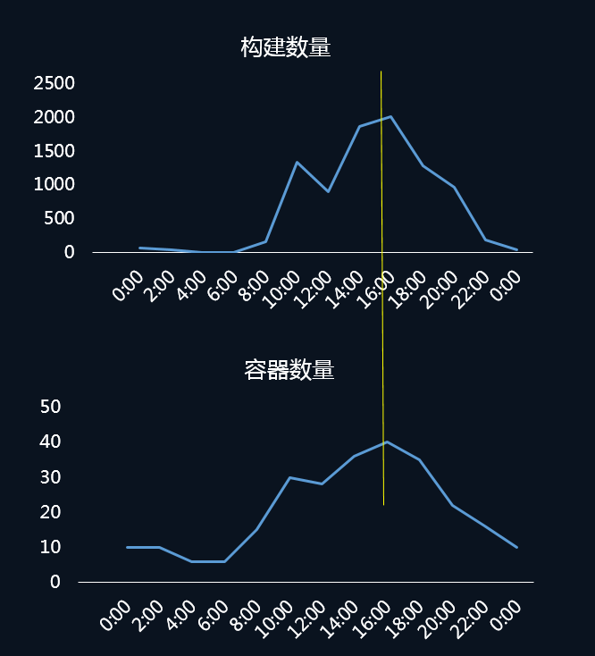

- 00 开篇词 量身定制你的持续交付体系.md
- 01 持续交付到底有什么价值？.md
- 02 影响持续交付的因素有哪些？.md
- 03 持续交付和DevOps是一对好基友.md
- 04 一切的源头，代码分支策略的选择.md
- 05 手把手教你依赖管理.md
- 06 代码回滚，你真的理解吗？.md
- 07 “两个披萨”团队的代码管理实际案例.md
- 08 测试环境要多少？从现实需求说起.md
- 09 测试环境要多少？从成本与效率说起.md
- 10 让环境自己说话，论环境自描述的重要性.md
- 11 “配置”是把双刃剑，带你了解各种配置方法.md
- 12 极限挑战，如何做到分钟级搭建环境？.md
- 13 容器技术真的是环境管理的救星吗？.md
- 14 如何做到构建的提速，再提速！.md
- 15 构建检测，无规矩不成方圆.md
- 16 构建资源的弹性伸缩.md
- 17 容器镜像构建的那些事儿.md
- 18 如何做好容器镜像的个性化及合规检查？.md
- 19 发布是持续交付的最后一公里.md
- 20 Immutable！任何变更都需要发布.md
- 21 发布系统一定要注意用户体验.md
- 22 发布系统的核心架构和功能设计.md
- 23 业务及系统架构对发布的影响.md
- 24 如何利用监控保障发布质量？.md
- 25 代码静态检查实践.md
- 26 越来越重要的破坏性测试.md
- 27 利用Mock与回放技术助力自动化回归.md
- 28 持续交付为什么要平台化设计？.md
- 29 计算资源也是交付的内容.md
- 30 持续交付中有哪些宝贵数据？.md
- 31 了解移动App的持续交付生命周期.md
- 32 细谈移动APP的交付流水线（pipeline）.md
- 33 进阶，如何进一步提升移动APP的交付效率？.md
- 34 快速构建持续交付系统（一）：需求分析.md
- 35 快速构建持续交付系统（二）：GitLab 解决代码管理问题.md
- 36 快速构建持续交付系统（三）：Jenkins 解决集成打包问题.md
- 37 快速构建持续交付系统（四）：Ansible 解决自动部署问题.md
- 持续交付专栏特别放送 答疑解惑.md
- 持续交付专栏特别放送 高效学习指南.md
- 结束语 越痛苦的事，越要经常做.md
16 构建资源的弹性伸缩
在前面的文章中，我已经介绍了构建在整个持续交付过程中扮演的重要角色，并且详细讨论了依赖管理和构建检测等方面的内容。在这篇文章中，我将带你搭建一套高可用、高性能的构建系统。
持续集成工具
目前市面上已经有很多持续集成工具了，它们已经替我们解决了很多实际问题，所以我们也就没有必要去再重复造轮子了。这些持续集成工具，最流行的应属 Travis CI、Circle CI、Jenkins CI这三种。
第一，Travis CI
Travis CI 是基于GitHub的CI托管解决方案之一，由于和GitHub的紧密集成，在开源项目中被广泛使用。
Travis CI 的构建，主要通过 .travis.yml 文件进行配置。这个 .travis.yml 文件描述了构建时所要执行的所有步骤。
另外，Travis CI 可以支持市面上绝大多数的编程语言。但是，因为Travis只支持GitHub，而不支持其他代码托管服务，所以官方建议在使用前需要先具备以下几个条件：
-
能登录到GitHub；
-
对托管在GitHub上的项目有管理员权限；
-
项目中有可运行的代码；
-
有可以工作的编译和测试脚本。
Travis CI的收费策略是，对公共仓库免费，对私有仓库收费。
第二，CircleCI
CircleCI 是一款很有特色，也是比较流行的，云端持续集成管理工具。CircleCI 目前也仅支持 GitHub 和Bitbucket管理。
CircleCI 与其他持续集成工具的区别在于，它们提供服务的方式不同。CircleCI 需要付费的资源主要是它的容器。
你可以免费使用一个容器，但是当你发现资源不够需要使用更多的容器时，你必须为此付费。你也可以选择你所需要的并行化级别来加速你的持续集成，它有 5 个并行化级别（1x、4x、8x,、12x，和16x）可供选择，分别代表利用几个容器同时进行一个项目的构建，如何选择就取决于你了。
第三，Jenkins CI
Jenkins 是一款自包含、开源的用于自动化驱动编译、测试、交付或部署等一系列任务的自动化服务，它的核心是Jenkins Pipline 。Jenkins Pipline可以实现对持续交付插件的灵活组合，以流水线的方式接入到Jenkins服务。
Jenkins 还提供了一整套可扩展的工具集，程序员可以通过代码的方式，定义任何流水线的行为。另外，经过多年的发展，Jenkins已经包含了很多实用的第三方插件，覆盖了持续交付的整个生命周期。
目前，绝大多数组织都选择了 Jenkins 作为内部的持续集成工具，主要原因是：
- 代码开源， 插件完善，系统稳定；
- 社区活跃，成功实践与网上资源比较丰富；
- Jenkins Pipeline 非常灵活好用。
大致了解了集成工具之后，携程和绝大部分企业一样，选择了最开放、最易于扩展的Jenkins作为集成构建的引擎，而且分别从实现横向的Master高可用和纵向的Slave弹性伸缩两方面，使构建系统更为强大和高效。
Jenkins Master 高可用架构的
目前普遍的 Jenkins 搭建方案是：一个 Jenkins Master 搭配多个 Jenkins Slave。大多数情况下，这种方案可以很好地工作，并且随着构建任务的增加，无脑扩容 Jenkins Slave 也不是一件难事。另外，不管是 Linux Slave 还是 Windows Slave ，Jenkins 都可以很好地支持，并且非常稳定。
但是，随着业务的增长，微服务架构的流行，持续交付理念的深入人心，构建会变得越来越多，越来越频繁，单个 Jenkins Master 终究会成为系统中的瓶颈。
遗憾的是，开源的 Jenkins 并没有给我们提供一个很好的 Master 高可用方案，CloudBees 公司倒是提供了一个高可用的插件，但是价格不菲。
所以，为了鱼与熊掌兼得，最终携程决定自己干。下面是我们构建系统的基本架构：

图1 携程Jenkins Master 高可用架构
携程的解决思路是在 Jenkins 上面再封装两层： Build Service 暴露构建的 HTTP 接口，接收请求后将任务丢给异步队列 Build Worker，Build Worker 根据不同的策略将任务分发给符合条件的 Jenkins Master。
这里的分发条件，可以是编译任务的平台或语言，比如可以将基于 Windows 和 Linux 的任务分别放在不同的 Jenkins Master 上，也可以将 Java 构建和 NodeJS 构建任务放在不同的 Jenkins Master 上。
除此之外，携程的这个构建系统还可以满足的一种需求是：一些比较复杂且重要的业务线，有时也会提出独立构建资源的需求，以达到独占编译资源的目的。
总而言之，构建任务分发的策略可以是非常灵活的：构建 Worker 和 Jenkins Master 之间有“心跳监测”，可以时刻检查 Jenkins Master 是否还健康，如果有问题就将任务分发到其他等价的 Jenkins Master 上，并给相关人员发送告警通知。
这种拆解 Jenkins Master 主要有以下几个好处：
-
每个 Job 都可运行在至少两个 Jenkins Master 之上， 保证高可用；
-
根据不同的策略将 Job 做 Sharding， 避免积压在同一个 Master 上；
-
Jenkins Master 按需配置，按需安装不同的插件，便于管理。
利用这套方案，携程就可以做到Master层面的伸缩了。这套方案的实现成本并不是很大，简单易懂，小团队也完全可以掌握和实施。
Jenkins Slave 弹性伸缩方案
解决了Jenkins Master的高可用问题，接着就要去思考如何才能解决Slave资源管理和利用率的问题了。因为，你会发现一个组织的集成和构建往往是周期性的，高峰和低谷都比较明显，而且随着组织扩大，幅度也有所扩大。所以，如果按照高峰的要求来配备Slave实例数，那么在低谷时，就很浪费资源了。反之，又会影响速度，造成排队。
因此，我们需要整个Slave集群具有更优的弹性：既要好管理，又要好扩展。在携程，我们尝试过多种虚拟机方案，比如全Windows类型、金映象方案等等。最后，根据容器的特性，选择了容器作为解决方案。期间也经历了Mesos 到 K8s的两套方案。
第一，最初的虚拟机
在最初构建种类不多并且场景不复杂的情况下，我们的 Slave 全部使用 Windows 虚拟机。
我们把所需的构建软件像大杂烩一样一股脑地安装在虚拟机上，比如，编译 .NET 所需的 MSBuild ，编译 Java 所需的 Maven。我们维护着一份啰嗦冗长的安装手册，并小心翼翼地这些文档保存在服务器上。
这时，最怕的就是构建环境的变更，比如某个软件要升级，要添加对某个新软件的支持。这些变更需要我们对所有机器的操作都重来一遍，甚至还需要关机重启，十分费时折腾。
后来，我们尝试了将虚拟机维护成镜像，并使用 SaltStack 做自动化变更。虽然日子好过了点，但升级一次环境还是需要投入不少人工成本。另外，文档的更新始终一件苦差事，从来不敢怠慢就怕某次变更没有记录在案。
你我都清楚，写文档从来都不像写代码那么舒服。程序员最讨厌的两件事也都和文档相关：一是给自己的软件写文档，二是别人的软件没有文档。
这让我们非常困扰，我们做的是 DevOps 与持续交付，但是自己的工具管理却如此混乱无章，这也使我们感觉十分蒙羞与窘迫。
第二，容器化的甜头
随着容器越来越流行，我们发现：使用容器镜像保存构建环境是一个非常不错的选择。相对于虚拟机，容器技术主要有以下几个优势：
-
使用 Dockerfile 描述环境信息相对于之前的文档更加直观，并且可以很自然地跟 Git 结合做到版本化控制，先更新 Dockerfile 再更新镜像是很自然的事。
-
镜像更容易继承，你可以配置一个 Base 镜像，然后根据不同的需求叠加软件。比如，你的所有构建都需要安装 Git 等软件，那么就可以把它写到 Base 镜像里面。
-
Docker 镜像可以自由控制，开发人员可以自己推送镜像，快速迭代。重建容器的代价比重建虚拟机小得多，容器更加轻量，更容易在本地做测试。
目前，携程的构建系统已经支持了包括： Java， NodeJS，Golang，Erlang，Python 等多种语言的构建，并且维护起来非常轻松，完全没有负担。
在尝到了 Linux 容器带来的甜头之后，我们毅然决然地开始研究 Windows 容器技术。经过不断地尝试与探索，终于把它应用到了生产环境，并且取得了非常不错的效果，目前为止运行也十分稳定。
第三，让资源弹起来
容器化在很大程度上解决了运维成本的问题，虽然通过 Docker 管理容器比虚拟机要方便一些，但是管理大量的容器却也没那么得心应手。
此外，我们之前使用容器的方式几乎和使用虚拟机一样，也就是所谓的 “胖容器”，一旦创建，不管用不用，它都在那里。而构建是一个周期性的行为，一般跟着程序员的工作时间走：工作日比周末多，白天比晚上多，甚至还有明显的午饭和晚饭空闲期。
后来 Mesos 与 Kubernetes等主流的容器集群管理工具渐渐浮出水面，出现在我们的视野中。
基于 Borg 成熟经验打造的 Kubernetes，为容器编排管理提供了完整的开源方案，并且社区活跃，生态完善，积累了大量分布式、服务化系统架构的最佳实践。在2017 年， 携程尝试将 Jenkins 和Kubernetes集成在了一起 。
目前，Jenkins 社区已经提供了一个Kubernetes插件，而且是免费的，使得 Jenkins 与 K8s 的集成变得非常简单轻松。

图2 构建数量与容器数量对比
上图就是我们某台宿主机 24 小时的构建数量与所创建容器的对比图，可以看出两条曲线呈现的趋势基本是一致的。我们在夜晚闲置的资源上，调度了一些其他的离线 Job，大幅提升了资源利用率。
所以，携程利用容器技术，也顺利实现了Slave节点的弹性伸缩。对于中小型企业，初期完全可以利用Jenkins及其Kubernetes插件，做到Slave节点的资源弹性伸缩。至于与离线Job混部，因为要考虑的因素较多，可以在应用容器化之后再考虑。
总结与实践
我主要介绍了几种流行的持续集成工具，以及基于 Jenkins 的高可用构建系统的一些基本设计理念和我们系统的演变过程。
-
通常建议使用成熟的CI产品（比如，Travis CI、Circle CI、Jenkins CI）来作为平台的基础；
-
虽然这些CI工具是成熟产品，但面对日新月异的技术需求，高可用和伸缩问题还是要自己解决；
-
通过请求分发等设计，可以实现Master节点的横向伸缩及高可用问题；
-
利用容器技术，可以解决Salve节点的弹性伸缩和资源利用率问题。
最后，你可以尝试搭建一套 Jenkins 与Kubernetes 服务，让你的任务跑在动态创建出来的容器上，并思考一下这个方案有没有什么缺点和不足。
感谢你的收听，欢迎你给我留言。
© 2019 - 2023 Liangliang Lee. Powered by Vert.x and hexo-theme-book.